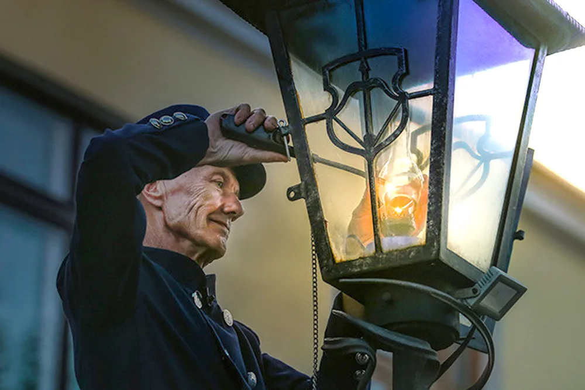

Брест
Брест — город с характером, стоящий на пороге Востока и Запада. Здесь история буквально дышит из-под мостовой: под улицами современного города скрыт старинный средневековый Брест, который археологи любовно раскрывают в музее под открытым небом. На рассвете город встречает первые солнечные лучи раньше других уголков Беларуси, а вечером зажигает фонари вручную — по старой доброй традиции, которую поддерживает настоящий городской фонарщик в мундире и цилиндре.
Но Брест — это не только древность. Это живое, динамичное место, где рядом с памятниками истории кипит современная жизнь. На главной пешеходной улице — Советской — кафе, уличные музыканты и художники создают атмосферу европейского города с белорусской душой. И, конечно, Брестская крепость — не просто памятник, а место силы, молчаливый свидетель мужества, которое до сих пор чувствуется в каждом её камне.
Среди достопримечательностей Бреста особенно выделяются:
- Мемориальный комплекс "Брестская крепость - герой"
- Музей "Спасённые художественные ценности"
- Музей железнодорожной техники
- Аллея кованых фонарей
- Музей "5 форт"
Брест — это место, где прошлое и настоящее живут в гармонии, приглашая каждого открыть для себя что-то особенное.